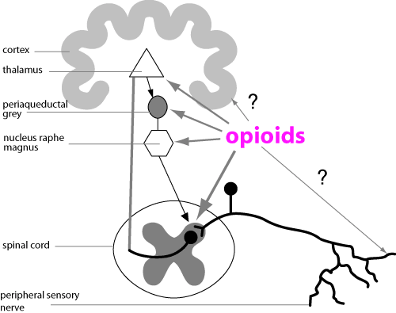

Mechanism of action
Opioids reduce firing in cells carrying pain signals (mainly in the spinal cord, but also in the brain stem): They hyperpolarise neurones by opening K+ channels (GIRK2 (Gprotein coupled inward rectifying potassium channels)). There are sex differences in these channels. Opioids also reduce transmitter release by closing N type Ca++ channels and may directly reduce neurotransmitter release at nerve endings.
Opioids cause mood effects by binding to µ receptors in the ventral tegmental area which projects to the reward pathways in the nucleus accumbens via a dopaminergic pathway using D2 receptors.
There is also some evidence that morphine injected intra-articularly in horses causes formation of large glycopeptides such as hyaluronic acid. (see anti-inflammatory notes). Opioid peptides may also have a role in control of reproductive hormones and inflammatory cells; they are expressed on macrophages in inflammation.
A variety of worms and other animals which are unlikely to feel
pain possess opioid receptors, but what they do is anyone’s guess. Opioid
receptors as a means of producing analgesia is probably a fairly recent evolutionary
development.

Sites of action of opioids. Morphine is probably so effective because there is synergy between the different actions.
| 5 CNS index |
| |
copyright
Massey University
|